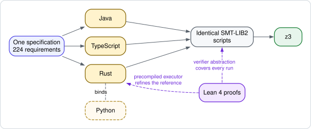

Java 25
ProductionCompletionStage actions
Maven coordinate
org.libpetri:libpetriModel concurrent, time-aware workflows as Petri nets, run them, and check them before they ship.
libpetri is a Coloured Time Petri Net engine for Java, TypeScript, Rust and Python. You describe a workflow as places that hold typed tokens and transitions that do the work. The runtime executes that net, the exporter draws it, and the verifier proves properties of it or returns the run that breaks them.

Four packages, one specification. Python binds the Rust runtime.
CompletionStage actions
Maven coordinate
org.libpetri:libpetriPromises and the event loop
Install
npm install libpetriTokio
Install
cargo add libpetri --features tokioTokio through PyO3. Binds the Rust runtime.
Install
pip install libpetriVerification runs the z3 executable, version 4.8.0 or newer, found on PATH or through LIBPETRI_Z3.